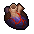

Dark heart
| Dark heart | |
|---|---|
 | |
General Information
| |
Type :
|
Bodypart |
Source(s)
| |
| Autopsy | |
Study Information
| |
Study reward:
|
|
Decomposition Products
| |
| Death extract | |
Quest Related NPCs
| |
| Snake, Inquisitor | |
Technical Information
| |
Internal name:
|
heart_dark |

Dark heart, as well as the other variants (Dark brain, Dark intestine), will randomly appear on newly delivered corpses. Obtained after progressing far enough through the Inquisitor quest-line.
Quest
Snake asks you to bring him a Dark heart for his final ceremony.
This is requested by the Witch Clotho to heal Koukol's curse.
The Inquisitor needs evidence for the presence of an occult in the town to convince the king of the inquisition's plans. For this he asks you to bring him one Dark heart, one Dark brain and one Dark intestine.
Study
| Study table | |||
|---|---|---|---|
| Tech Points | Resources Required | Energy | Notes |
| 5× Faith 5× Science |
- |
Decomposes into extract. | |
Alchemy
| Distillation cube | |
|---|---|
| Items Produced | Materials Required |
| 2× Death extract |
1× Dark heart |
| Distillation cube II | |
| Items Produced | Materials Required |
| 3× Death extract |
1× Dark heart |
| |||||||||||